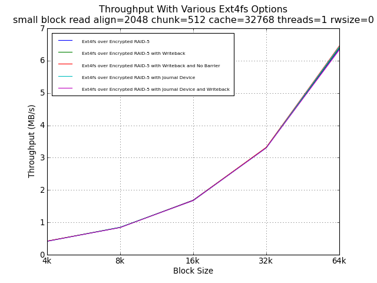
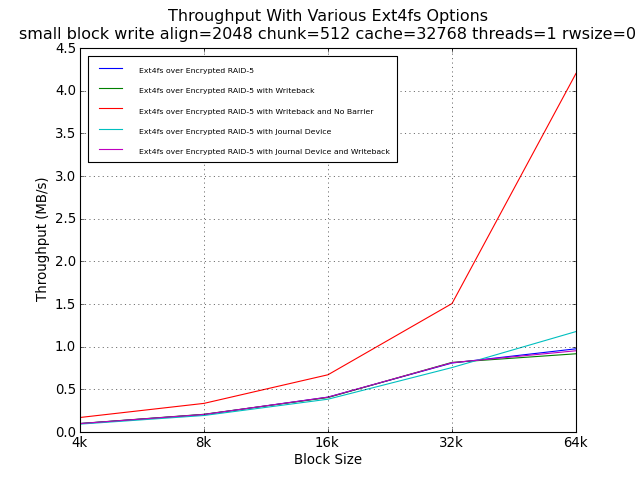
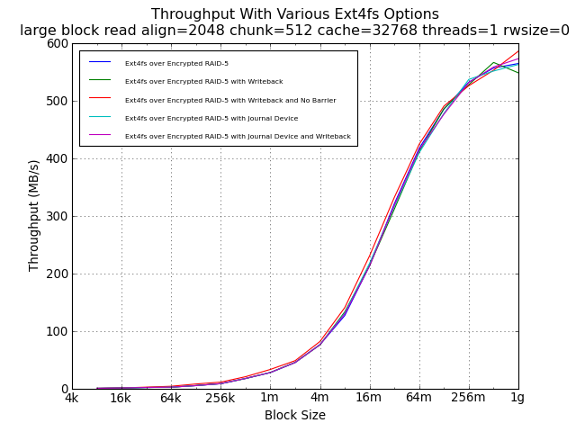
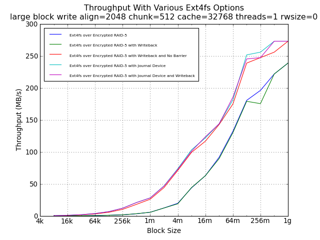

First, we notice that reads are uneffected by these options, which are only expected to have an impact on writes.
For small block wirtes, only the lack of a barrier helps performance, and then raises it above the underlying encrypted RAID-5 performance documented elsewhere in this study. This suggests caching and the possibility of severe data loss in the face of a power failure. This option is not recommended.
For large block writes, placing the journal on an SSD partition, with or without data=writeback, provide the same level of performance as the elimination of barriers. This is an impressive result, since data=order and barrier=1 provide the best data integrity in the face of a power failure.
Recommendation: Place the journal on an SSD partition but leave other defaults in place (i.e., data=ordered,barrier=1). This has some security/privacy risk since the SSD is not encrypted, so up to 400MB of unencrypted metadata would be in the journal at any time.
Ext4fs over Encrypted RAID-5 means IO to a 1TB file created with 'dd if=/dev/zero of=/mnt/file bs=1024k count=1400000' on an ext4fs file system created with 'mke2fs -t ext4 -E stride=128,stripe-width=512,lazy_itable_init=0 /dev/mapper/r0' that was mounted with 'mount /dev/mapper/r0 /mnt -o noatime,nodiratime'
Ext4fs over Encrypted RAID-5 with Writeback was mounted with 'mount /dev/mapper/r0 /mnt -o noatime,nodiratime,data=writeback,nobh' (nobh was deprecated and ignored on the test system's kernel).
Ext4fs over Encrypted RAID-5 with Writeback and No Barrier was mounted with 'mount /dev/mapper/r0 /mnt -o noatime,nodiratime,data=writeback,nobh,barrier=0' (nobh was deprecated and ignored on the test system's kernel).
Ext4fs over Encrypted RAID-5 with Journal Device used an SSD partition for a journal, created with 'mke2fs -O journal_dev /dev/sda3' and 'mke2fs -t ext4 -J device=/dev/sda3 -E stride=128,stripe-width=512,lazy_itable_init=0 /dev/mapper/r0' and mounted with 'mount /dev/mapper/r0 /mnt -o noatime,nodiratime'.
Ext4fs over Encrypted RAID-5 with Journal Device and Writeback used the same journal device and writeback mount options documented above.
The lazy_itable_init=0 option is requried to prevent the background creation fo the itable from impacting test results.



